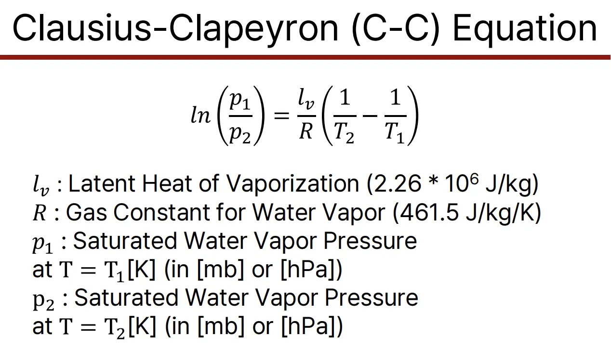
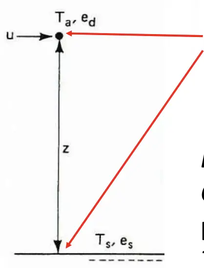
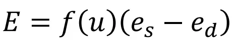

9/10 (수)
📎 Lecture_Week_2.pdf — 용량 때문에 아카이브에서 제외, 노션 원본 참고
- 열권 (Thermosphere): 우주와 접하는 고도 85-500km 부분으로, 태양 복사열을 흡수해 온도가 높지만 공기 분자 간 거리가 멀어 체감 온도는 낮다.
- 중간권 (Mesosphere): 고도 50-85km에 위치하며 대기 중 가장 차가운 지역으로, 유성이 타는 곳이다.
- 성층권 (Stratosphere): 고도 12-50km에 위치하며 오존층이 포함되어 자외선을 흡수해 지구 생명체를 보호한다.
- 대류권 (Troposphere): 지표면에서 약 12km까지의 최하층 대기로, 우리가 숨쉬는 공기가 있고 대부분의 기상 현상이 발생한다.
- 기온이 꾸준히 감소할 것이라 예측
- 절대온도 0도가 발생할 것으로 예상
- 열기구로 관측 (콕스웰과 글레이셔의 관측)
- 19세기말-20세기초 무인 관측
- 자동 관측 기계 관측 시도(1892년)
- 주로 밥에 관측
- 성층 관측은 어려웠음
- 고무 풍선이 소개되어 현대적 무인 관측 시작
- 성층권 발견
- 테스랑 드 보트, 아스만 : 고도 12-14km정도 기온이 다시 상승함을 발견
- 날씨 vs 기후 vs 기상
- 날씨 : 현상 (기압변화, 수증기 변화 등 기록 가능). 짧은 시간-좁은 범위 지역에 나타나는 대기 상태
- 기후 : 장기적, 큰 범위. 날씨의 편균적 패턴
- 기상 : 대기 현상 전반을 지칭하는 말
9/15 (월)
📎 Lecture_Week_3.pdf — 용량 때문에 아카이브에서 제외, 노션 원본 참고
- 싱크홀 - 도시에선 아스팔트 밑 지반이 약해서 많이 발생
- 나가는 에너지 \< 들어오는 에너지
- Net absorbed = 0.9 W m^(-2)
- 열 전달
- 1. 물의 상변화
- 현열 : 물질의 상태 변화없이 온도를 올리어나 내리는데 사용되는 열량
- 1. 전도
- 2. 대류
- 물질(유체)에서 온도차이로 인해 밀도가 달라지면서유체가 직접 이동
- 1. 이류
- 유체가 가진 물리량(온도, 습도, 농도 등)이 유체의 움직임(바람, 해류 등)을통해 이동하는 현상
한랭이류 : 바람이 한랭한 곳에서 온난한 곳으로 붐
온난이류 : 바람이 온난한 곳에서 한랭한 곳으로 붐
- 1. 복사
- 전자기파의 현태로 열 전달
- 1. 플랑크 법칙 : 물체에서 방출되는 에너지 - 파장 관계
- 에너지는 파장 역수의 5제곱에 비례
- b. 빈의 법칙 : 복사 에너지 파장 - 온도 관계
- c. 슈테판-볼츠만 법칙 : 물체 운도 - 방출복사 에너지 관계
9/17 (수)
- F_in = F_out로 가정
- shadow area만큼 복사에너지를 받음.
- 이걸 통해 지구에서 밖으로 나가는 에너지를 구할 수 있음
- F_in = (ε)F_out
- ε : Emissivity ⇒ 에너지가 얼마나 방출되는지
- ε = 1 : 흑체인 경우
- α : Albedo ⇒ 표면에서 바로 반사되는 정도
- calculate ⇒ 255 K (-18 도씨)
- ⇒ 온실효과가 교려되지 않아 낮게 됨.
9/29 (월)
포화 수증기압
- 주어진 온도에서 공기가 수증기로 포화 상태에 있을 때 수증기의 압력
- 기온 높을수록 포화 수증기압 높음
포화 수증기압 곡선
상대습도(Relative Humidity, RH)
- = (수증기 함량 / 수증기 수용량) * 100%
= (실제 수증기압/포화수증기압) * 100%
RH의 두가지 변화 방법
- ⇒ 공기 중 수증기량 변화, 수증기의 수용량 변화(기온 변화)
- 보통 습도라는 용어는 상대 습도를 의미함
상대 습도와 불쾌감
선형적 or 비선형적 ⇒ 비선형적
- → 온도가 다른 지점에서 기울기를 확인해 보면 알 수 있음.
- ⇒ 온도 변화로 인한 기후 변화 영향이 지역마다 다를 수 있음
A에서 상대습도를 수하는 법
- → 같은 온도에서 포화 수증기압(B)와 비교하여 구함
이슬점 온도
- 대기 중 수증기의 절대량 측정
- 공기가 포화되어 수증기가 응결하기 시작하는 온도
- → 수증기량과 이슬점 온도가 직접적으로 비례함.
- 상대습도가 높은 지역은?
- → 좌측 : 이슬점 온도, 현재 온도가 같으면 수증기 포화 상태임 ⇒ 100%
- → 우측 : 두 값의 차이가 매우 큼 → RH가 매우 낮음
- 수증기량이 보다 많은 지역은?
- → 수증기량은 이슬점 온도에 직접적으로 비례함.
응결
- 대기 중의 응결핵에 부착하여 응결 시작
- 흡습성(hygroscopic) 응결핵 - 수증기의 응결이 쉽게 일어나는 입자
- 소수성(hydrophobic) 응결핵 - 물의 응결이 일어나지 않는 입자
- → 중간고사
안개
- (a)복사 안개
- → 복사로 열을 내보냄으로서 냉각됨 → 이슬점에 도달하면 수증기가 응결해 안개 형성
- (b)이류 안개
- → 따뜻하고 습한 공기가 차가운 지표면 위로 이동할 때, 식으며 이슬점에 도달함.
- (c)활승 안개
- → 공기가 경사진 지형을 따라 활승하면서 생기는 안개
대기 안정성(Atmospheric Stability)
대기 상승

- C-C equation
- 공기가 상승하면, 온도가 감소함.
- → 압력 감소 → 부피 감소 → Expansional cooling ⇒ cloud formation
고도에 따른 기온 변화
10/1 (수)
대기 하강
Adiabatic lapse rate(단열감율)
- Dry adiabatic lapse rate(건조단열감율) : 공기가 포화되지 않은 상태(구름 없음)로 상승할 때
- → RH가 100% 미만일 때 작용
- ⇒ 약 10 도/km (빠르게 냉각됨)
- Wet adiabatic lapse rate(습윤단열감율) : 공기가 포화상태(구름 형성됨)일 때
- → 수증기가 응결하며 잠열(latent heat)을 방출하기 때문.
- ⇒ 약 5~6도/km (천천히 냉각됨)
상승 시
- 1km : 구름이 상승 할 때 -10도 감소 → 응결점 온도와 같아짐 ⇒ 구름이 생성되는 지점.
- D → 20 C, 20 millibars : 포화수증기압 곡선(saturation vapor pressure curve) 만남
- ⇒ 1km 이후부터는 습윤단열과정이기 때문에 1km당 5도씩 온도가 감소하게 된다.
- = 포화수증기압 곡선을 따라 압력이 감소되는 정도만큼 온도가 감소함.
- → 1~3km에서 총 10도씨 감소
하강 시
- 3km 건조단열감율에 따라 온도 상승 ⇒ 30도 상승
증발산(Evapotranspiration, ET)
- 증발(evaporation) + 증산(transpiration)
- 증발 : 땅, 강, 호수, 바다 등의 표면에서 액체 물이 수증기로 변해 대기로 이동
- 증산 : 식물이 뿌리로 흡수한 물을 잎의 기공을 통해 수증기로 내보내는 과정
10/13 (월)
Surface Energy Balance
- Sensible Heat(H)
- Latent Heat(LH or ET, 잠열)
How to measure evaporation
- pan evaporation : measurement of water loss
Thin-film Concept of Evaporation
- Evaporation rate
- concept : water 과 air 사이 얇은 층에서 증발이 발생

- From meyer’s Method

- e_s - e_d : vapor pressure의 차이
- u : wind speed
From Meyer’s Law
- C’ is constant (~ 0.36)
- u_s is wind speed at elevation of 8m
Example : Lake evaporation estimation
- given that
- 1. Mean air temperature in June = 30˚C,
- 2. Mean water temperature in June = 25˚C,
- 3. Wind speed at 8 meter above the ground = 15 km/h, and
- 4. Relative Humidity = 70%
- Estimate the lake evaporation in June.
- 1. e_s - e_d = (23.76 mm of HG) - (31.82 mm of HG)*(0.7)
- 1. e_d = saturation VP * RH
- 2. 참고 : Saturation VP 는 mm of HG를 쓰기
- 2. f(u) = C’(1 + u_s/16) = (0.36)(1 + 15/16) = 0.6975
- 3. 이때 E는 cm/day로 나와서 10을 공해줘야 함
- 4. E = f(u)(e_s - e_d) * 10 = 10.37 mm/day = 310.11 mm/month
10/15 (수) + Preview
- 엘니뇨 : 적도지방 해양이 뜨거워진 상태.
- 리니냐 : wet → dry, dry → wet 해짐
- thermohaline circulation
- 과학적 접근 방법
- → 이론을 기반으로 접근, 원리를 이해하느냐 안하느냐
- 공학적 접근 방법
- → 문제를 해결하기 위해 과학적 방법을 응용, 문제를 해결하느냐 안하느냐
- ⇒ 최근 환경 문제에서 공학적 접근 방법도 중요해짐. (지구 공학, 기후 공학)
- 기후 피드백
- 지구온난화 피드백
- 강제력 → 기후시스템 변화 → 기후 반응 형태
- 양성 피드백 : 따뜻해짐 → 변화가 생김 → 더 뜨거워짐
- CO2양의 양성 피드백
- CO2 복사 강제력 → 온도 증가 → 대기중 이산화탄소 농도 증가
- 수증기 피드백
- 온도 증가 → 수증기 증가 → 온실효과 증태야
- 알베도 피드백
- 태양 에너지 흡수 증가 → 해빙/눈덮임 감소 → 알베도 감소
- <details>
- note. 계산기 꼭 지참하기
- 5지선다 40%
- 문제풀이 60%
- 1. Residence Time
- 공식에 대입 문제
- 마지막 unit에 주의하기 년, 월 등
- 1. Effective Temperature
- what is the effective temperature of the Earth?
- 알비도 등이 바뀌었을 때 계산할 수 있는지 물어보는 문제
- (식은 주어짐 식을 외워서 올 필요는 없음)
- 1. Adiabatic lapse rate
- what is relative humidity at 2 KM for the down hill side?
- ** 여기선 mb로 RH를 구함
- starting point
- T = 30, T_D = 20
- dew point temperature ⇒ 공기 중 수증기가 응결하기 시작하는 이슬점 온도(곡선과 만남)
- T = 30 ⇒ e = 40mb
- Td = 20 ⇒ e = 20mb
- 상대습도 RH = e/ e_sd = 50% ≠ 100% → ⇒ 건조단열감율 → L_D = - 10C/km
- ⇒ 1km 상승 시 10도 감소
- T(h) = 30 + (-10)h. since RH ≠ 100%
- ⇒ h be 1 km → T ⇒ 20 that is, T == T_D
- ⇒ 그래프상 -x 방향으로 직선으로 움직임 (그래프와 닿을때까지)
- Cloud
- 이후 B ⇒ RH = 100% at T == T_D
- ⇒ 그래프상 그래프를 따라 왼쪽 아래로 이동
- top
- 산의 정상에 도달 → 공기가 이제 내려오게 됨.
- T(dh) = 20 + (-5)dh = 20 + (-5)2 = 10도 → e_T=10 = 10mb
- 하강 중 2km 부근
- dh \< 0, RH 감소. since vaper pressure e 가 감소
- ⇒ + x 방향으로 직선 움직임
- 건조단열감율 RH ≠ 100%
- T(dh) = 10 + (-10)dh = 10C+ (-10C/km)(-1km) = 20
- RH = e/ e_s = 10 / 20 = 50%
- 1. ET models (Evapotranspiration models)
- e_s - e_d : vapor pressure의 차이
- u : wind speed
- </details>
From Meyer’s Law
- C’ is constant (~ 0.36)
- u_s is wind speed at elevation of 8m
Example : Lake evaporation estimation
- given that
- 1. Mean air temperature in June = 30˚C,
- 2. Mean water temperature in June = 25˚C,
- 3. Wind speed at 8 meter above the ground = 15 km/h, and
- 4. Relative Humidity = 70%
- Estimate the lake evaporation in June.
- 1. e_s - e_d = (23.76 mm of HG) - (31.82 mm of HG)*(0.7)
- 1. e_d = saturation VP * RH
- 2. 참고 : Saturation VP 는 mm of HG를 쓰기
- 2. f(u) = C’(1 + u_s/16) = (0.36)(1 + 15/16) = 0.6975
- 3. E = f(u)(e_s - e_d) = 10.37 mm/day = 310.11 mm/month
- wind speed에 따라 evaporation의 변화도 구할 수 있어야 함.
- <details>
- 대기과학 시험 준비 리뷰 세션 2025-10-20
- ### 주요 개념 정리
- 체류 시간(Residence Time) 계산
- 인플로우와 아웃플로우, 스토리지 양에 따른 체류 시간 계산 방법
- 기후변화로 인한 증발량 변화가 체류 시간에 미치는 영향
- 계산 시 요구되는 단위(유닛)에 맞게 변환 필요 (일, 월 등)
- 복사에너지와 온도 관계
- 스테판 볼츠만 법칙을 이용한 지표면 온도 계산
- 알베도 변화에 따른 유효 온도(effective temperature) 계산
- 고도에 따른 온도 변화
- 드라이 랩스 레이트(dry adiabatic lapse rate)
- 웻 랩스 레이트(wet adiabatic lapse rate)
- 상대습도 100%일 때 웻 랩스 레이트 사용
- ### 예제 문제 분석
- 산 지형의 온도 변화 계산 예제
- A 지점: 초기 온도 30°C, 이슬점 온도 20°C, 상대습도 50%
- B 지점: 상승 과정에서 상대습도 100% 도달
- C 지점: 산 정상(2km 고도)에서의 온도 10°C
- D 지점: 하강 후 온도 20°C, 상대습도 50%
- 이 과정에서 드라이/웻 랩스 레이트 적용 시점 구분 중요
- 증발량(Evaporation) 계산
- Meyer의 모델 활용
- 증발량 단위: cm/day
- 풍속, 포화 수증기압, 실제 수증기압 차이에 따른 증발량 변화 계산
- 온도 변화(예: 30°C → 32.5°C)에 따른 증발량 변화 예제
- ### 시험 준비 조언
- 강의 노트를 2-3번 충분히 리뷰할 것
- 출제자 입장에서 변수를 바꿔 문제를 만들어보며 연습할 것
- 예: 고도를 3,000m에서 4,000m로 변경하여 새로운 문제 생성
- 단위 변환에 주의할 것
- 공식 적용 시점을 명확히 이해할 것 (특히 웻/드라이 랩스 레이트)
- ### 학과 정보
- 환경융합구정부, 환경과학개론, 기후변화 이해 과목 수강 권장
- 방역인과 부전공 및 인터셉트 프로그램 소개
- </details>
- --
- 환경 = 자연환경 + 생활환경
- 오염물질의 농도와 한계오염물질
- 농도 =
- 한계오염물질 = 한계 수준에 도달했을 때만 오염물질의 해로운 영향을 만들어 냄
- 비한계오염물질 = 양과 상관 없이 해로운 영향을 줌
- 인위화합물 종료 확인해보기
- 인위적, 자연적 오염물질 대출 원인이 다름
- 환경문제의 발생원인
- 1. 인구증가
- 2. 오염물질 발생량 = 인구수 * 1인당 자원사용량 * 자원사용단위당 오염물질발생량
- 지원의 과다 사용 안나옴
- --
- 영구기체
- 질소가 가장 많음
- 변량기체
- 수증기가 젤 중요함 (온실기체) - 인위적으로 발생하지 않음 ⇒ 자연 변량기체
- 이산화탄소
- 온도와 강우량?
- 오존, 메탄, 에어로즐
- 기압과 밀도의 연직 분포 : 고도가 높아지면 기압은 떨어짐, 온도는 다양함
- CFC ⇒ 오존 파괴 촉매 역할
- 기상관측 역사 (언제 뭐가 관측되었는지?)
- 1901 고무풍선 무인관측
- 1908 빅토리아호 상층관측
- 열기구로 관측
- 날씨 Vs 기후 설명하기
- --
- 에너지
- 위치, 운동, 열 에너지
- 온도 : 원자 분자의 평균운동속도
- 열의 전달 과정
- 상변화
- 전도
- 대류(convection) ⇒ 열이 수직으로 이동하는 과정 (유체)
- 이류(advection) ⇒ 열이 수평으로 이동하는 과정 (유체)
- 복사(radiation) ⇒ 접촉하지 않고 열이 이동하는 과정
- ⇒ 열전달은 두물질의 에너지가 평형을 이룰때까지 이루어짐.
- 열전도도
- 복사
- 전자기파
- 플랑크의 법칙 : 물체에서 방출되는 에너지 - 파장 관계
- 빈의 법칙 : 최대 복사에너지 파장 - 표면 온도
- 슈테판 볼츠만 법칙 : 복사에너지 - 온도
- → 0K 이상이면 모든 물질 전자기파 방출함
- 화성
- 수증기가 없음 ⇒ 온실효과가 약함 ⇒ 온도가 훨씬 낮음
- --
- 대기 수증기의 물순환
- 증발
- 응결 - 고도 변화 응결 온도
- 포화 - e_s 계산
- 습도 : 상대습도, 절대습도
- 상대습도 RH = e/e_s
- e_s는 T-e 그래프에서 현재 상태를 (T, e)이면
- 실제 온도 T와 그래프가 만나는 점 (T, f(T))
- 응결핵
- 흡습성, 소수성 그림 보고 답할 수 있어야 함
- 냉각에 의한 안개, 증발에 의한 안개
- --
- 상대습도가 더 높은 지역은?
- T = -2, Td = -2
- T = 35, Td = 10
- ⇒ T, Td가 서로 가까우면 상대습도가 높음
- 이슬점 온도를 통해서 실제 수증기 양을 알 수 있음
- 대기 상승
- 대기 상승 ⇒ 부피가 증가함. since 기압이 낮아짐.
- 부피 증가에 어너지를 사용하여 온도가 감소함
- adiabatic vs wet rate 언제 쓰는지 확인하기
- 실제로 손으로 문제 풀어보기 - 고도에 따른 온도 변화
- --
- 기후변화(마지막 PPT)